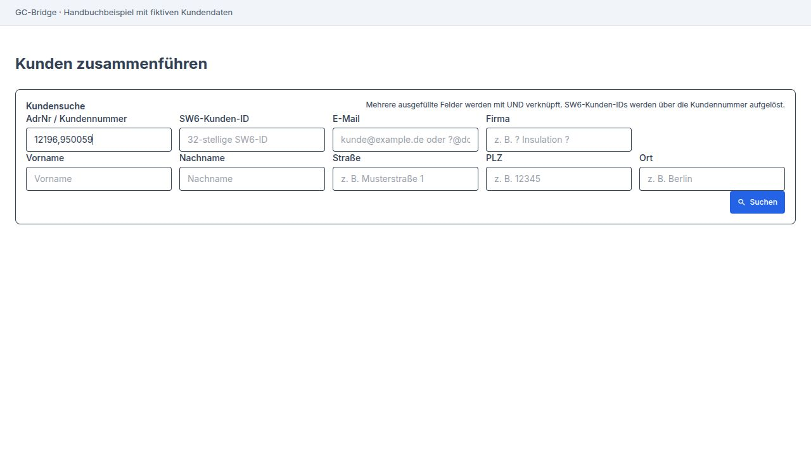
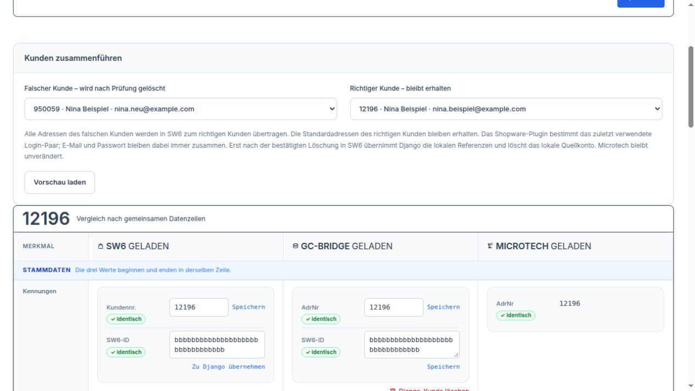
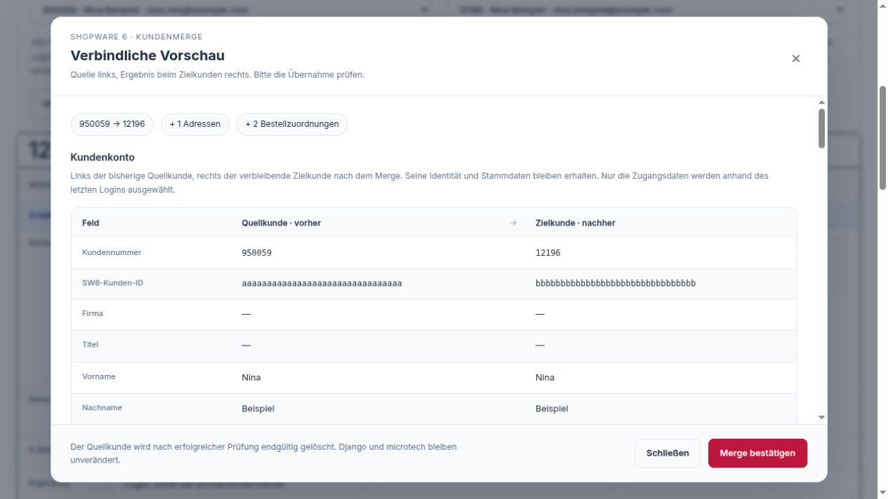
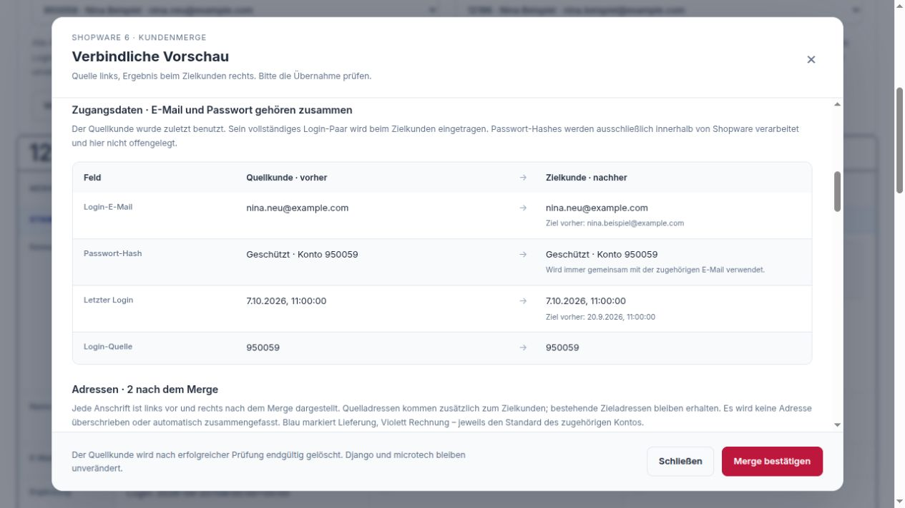
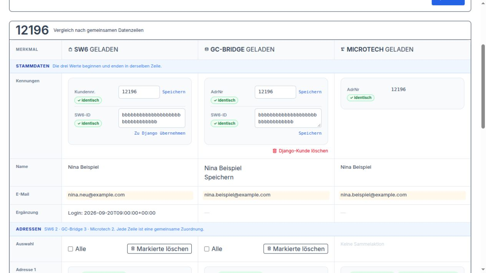
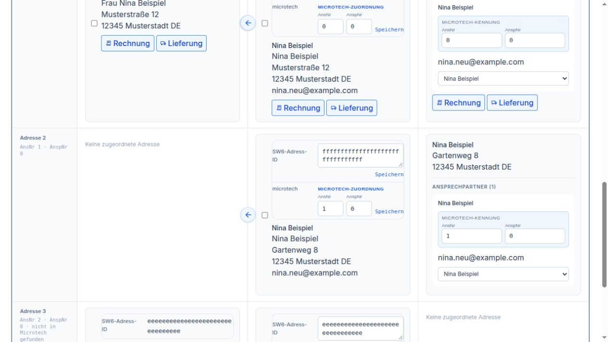
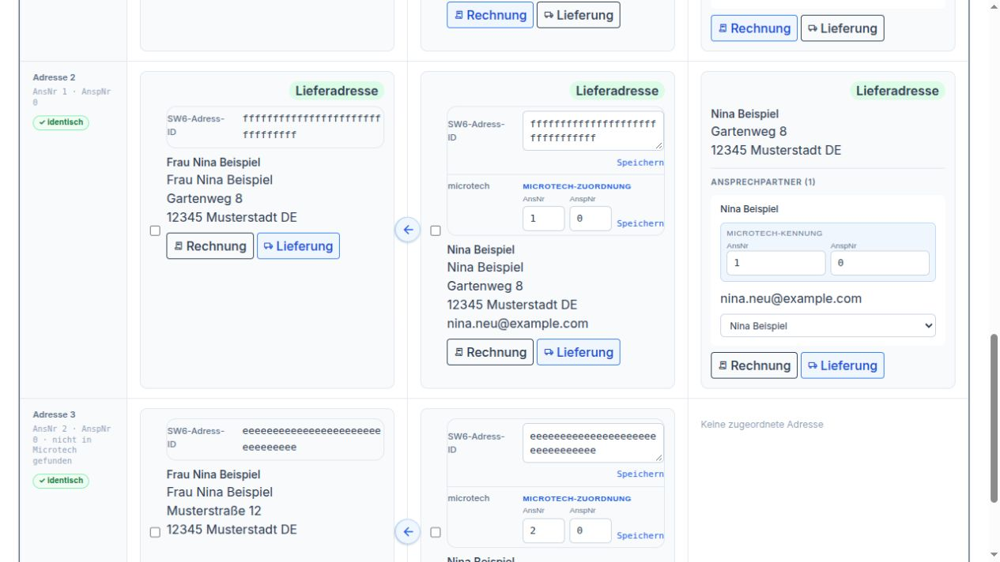
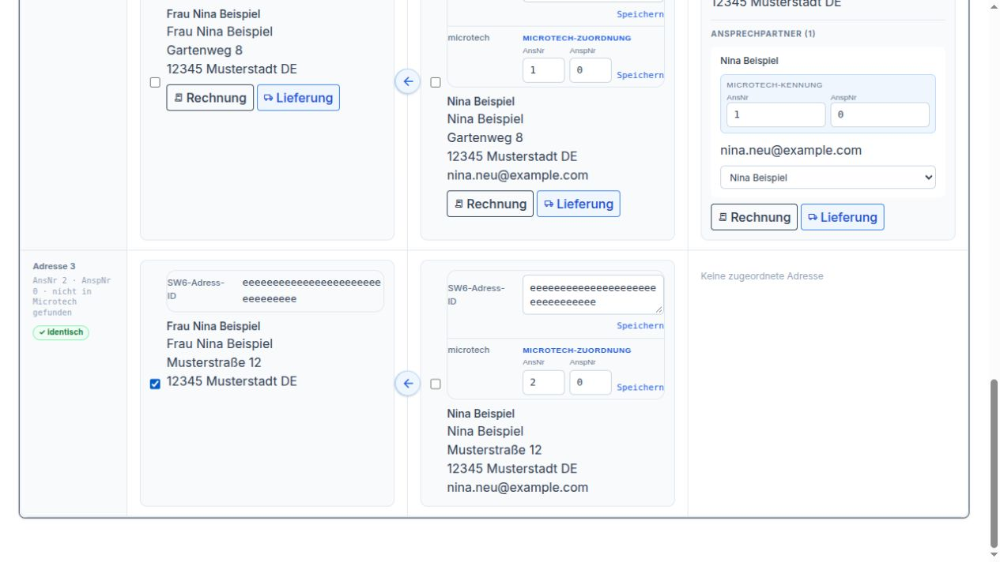

Kunden¶
Kunden zusammenführen¶
Unser Beispiel: Nina Beispiel ist bereits Kundin unter der Nummer 12196. Sie meldet sich im Shop noch einmal an und erhält die Nummer 950059. Nun gibt es zwei Kundenkonten für dieselbe Person. Wir möchten mit 12196 weiterarbeiten und die Bestellungen und die Adresse von 950059 dorthin übernehmen.
Nina wohnt in der Musterstraße 12. Ihre Pakete möchte sie künftig an den Gartenweg 8 bekommen. Wir begleiten diesen einen Fall vom Zusammenführen bis zur Prüfung der Adressen.
Die Bildschirmfotos zeigen die Bedienoberfläche mit fiktiven Beispieldaten. Nina Beispiel, ihre Anschriften und Bestellungen sind frei erfunden.
1. Beide Kunden suchen
Öffnen Sie Kunden → Kunden zusammenführen. Tragen Sie bei AdrNr / Kundennummer die beiden Nummern 12196,950059 ein. Lassen Sie die übrigen Suchfelder leer und klicken Sie auf Suchen. So werden beide Kunden nebeneinander prüfbar.


Beide Nummern stehen im selben Suchfeld, durch ein Komma getrennt.¶
Prüfen Sie die Treffer: Gehören Name, E-Mail-Adressen und Anschriften wirklich zu Nina? Zwei Menschen mit demselben Namen sollen nicht zusammengeführt werden. Wird nur noch eines der beiden Konten gefunden, prüfen Sie den verbliebenen Kunden und seine Adressen. Ein weiterer Merge ist dann für dieses Beispiel nicht nötig.
2. Festlegen, welcher Kunde bleibt
Bei Falscher Kunde – wird nach Prüfung gelöscht wählen Sie 950059. Bei Richtiger Kunde – bleibt erhalten wählen Sie 12196. Nina soll künftig unter ihrer bisherigen Nummer geführt werden. Klicken Sie anschließend auf Vorschau laden.


Links steht das zusätzliche Konto 950059, rechts der Kunde 12196, der bleibt.¶
3. Die Vorschau gemeinsam mit dem Beispiel lesen
Die Verbindliche Vorschau zeigt links das bisherige Konto 950059 und rechts das geplante Ergebnis bei 12196. In unserem Beispiel kommen eine Adresse und zwei Bestellungen hinzu. Ninas bisherige Bestellung bei 12196 bleibt ebenfalls erhalten.


Die Vorschau zeigt, was zum Kunden 12196 hinzukommt.¶
Nina hat zuletzt das neue Konto mit nina.neu@example.com benutzt. Die Vorschau zeigt deshalb diese E-Mail-Adresse als künftigen Zugang. Sie verwendet danach das dazugehörige Passwort. Ihre Kundennummer bleibt trotzdem 12196.
Unter Adressen prüfen Sie die Musterstraße 12. Sie steht in unserem Beispiel schon beim alten Kunden und auch beim neuen Konto. Nach der Zusammenführung bleiben zunächst beide Adressen erhalten. Die Vorschau entfernt gleiche Adressen nicht von selbst. Ninas bisherige Rechnungs- und Lieferadresse bei 12196 bleibt zunächst ausgewählt.


Prüfen Sie Ninas künftigen Zugang und anschließend ihre Anschriften in der Vorschau.¶
4. Bestätigen und das Ergebnis prüfen
Passt alles zu Nina, klicken Sie auf Merge bestätigen. Das Konto 950059 wird aufgelöst. Seine Adresse und seine beiden Bestellungen gehören anschließend zu 12196. Auch die Bridge ordnet ihre entsprechenden Einträge dem verbliebenen Kunden zu. Ninas Kunde in Microtech wird durch diesen Schritt nicht geändert.
Warten Sie auf die Erfolgsmeldung. Erscheint stattdessen Status prüfen, benutzen Sie diese Schaltfläche und warten Sie auf ein klares Ergebnis. Starten Sie den Vorgang nicht noch einmal auf Verdacht.
Suchen Sie danach erneut nach 12196. Prüfen Sie Ninas Adressen und ihre Bestellungen. Rechnungen und Lieferanschriften bereits vorhandener Bestellungen bleiben so erhalten, wie sie damals erstellt wurden. Mit den drei Spalten prüfen wir nun, ob Nina ihre nächste Lieferung an die richtige Anschrift erhält.
Funktionen der drei Spalten¶
Wir bleiben bei Nina Beispiel, Kundennummer 12196. Nach dem Zusammenführen suchen Sie diese Nummer erneut. Lesen Sie die Angaben von links nach rechts: SW6, GC-Bridge, Microtech. Warten Sie, bis die jeweilige Spalte fertig geladen ist.


Links Ninas Shopkonto, in der Mitte die Bridge und rechts ihr Kunde in Microtech.¶
Links: SW6 – Ninas Angaben im Shop
Hier sehen Sie, unter welcher Nummer Nina im Shop geführt wird, welche E-Mail-Adresse sie dort verwendet und welche Anschriften der Shop kennt. Im Beispiel stehen 12196 und nina.neu@example.com. Das passt zum Ergebnis aus der Vorschau.
Neben der Kundennummer steht Speichern. Damit würde eine geänderte Nummer im Shop gespeichert. Bei Nina ist 12196 bereits richtig und bleibt stehen.
Zu Django übernehmen verbindet den angezeigten Shopkunden mit dem Kunden in der mittleren Spalte. Bei Nina passen beide bereits zusammen. Dafür müssen Sie nichts erneut übernehmen. In dieser Oberfläche meint Django die GC-Bridge.
Der Pfeil nach rechts an einer Shopadresse kopiert diese Anschrift in die Bridge. Wäre der Gartenweg 8 nur links vorhanden, würden Sie ihn mit diesem Pfeil in die mittlere Spalte übernehmen.
In der Mitte: GC-Bridge – Ninas Kunde zwischen Shop und Microtech
Hier prüfen Sie Ninas Namen, ihre Kundennummer und ihre Anschriften in der Bridge. Stünde beim Namen nur „N. Beispiel“, könnten Sie das Feld auf Nina Beispiel ändern und mit Speichern direkt daneben sichern. Mit dem Speichern neben der Kundennummer ändern Sie entsprechend nur diese Nummer in der Bridge. In unserem Beispiel sind Name und Nummer bereits richtig.
Bei den Adressen sehen wir einen Unterschied: Der Gartenweg 8 ist in der Bridge und in Microtech vorhanden, links im Shop fehlt er noch. Nina hat bestätigt, dass ihre nächsten Pakete dorthin gehen sollen. Klicken Sie beim Gartenweg 8 auf den Pfeil nach links. Damit kopieren Sie diese Anschrift aus der Bridge in den Shop.


Der Pfeil nach links am Gartenweg 8 übernimmt genau diese Adresse in den Shop.¶
Klicken Sie anschließend erneut auf Suchen, um das Ergebnis zu sehen. Prüfen Sie, dass der Gartenweg 8 jetzt auch in der linken Spalte steht. Ein Pfeil kopiert eine Adresse; er führt keine Kunden zusammen.
Rechts: Microtech – Ninas Angaben in der Warenwirtschaft
Rechts vergleichen Sie Ninas bekannte Anschriften und Ansprechpartner. Im Beispiel finden wir hier die Musterstraße 12 und den Gartenweg 8. Damit können wir prüfen, ob wir in den beiden anderen Spalten die richtigen Anschriften ansehen.
Bei Ninas Ansprechpartner gibt es die Auswahl Bestehende Bridge-Adresse zuordnen. Damit lässt sich ihr Ansprechpartner mit einer bereits vorhandenen Adresse in der mittleren Spalte verbinden. Eine zusätzliche Adresse wird dabei nicht angelegt. Im Beispiel gehört Nina bereits zur passenden Adresse Gartenweg 8 in der Mitte. Deshalb lassen Sie die Auswahl dort stehen. Wenn mehrere Einträge denselben Namen zeigen, prüfen Sie erst die zugehörigen Anschriften, statt allein nach „Nina Beispiel“ auszuwählen.
In der Microtech-Spalte gibt es keine Sammelschaltfläche zum Löschen von Adressen. Für Ninas Vergleich verwenden Sie diese Spalte vor allem, um Anschrift und Ansprechpartner abzugleichen.
Für Ninas nächste Lieferung den Gartenweg 8 wählen
Sobald der Gartenweg 8 in allen drei Spalten passend zusammengehört, erscheinen an dieser Anschrift die Schaltflächen Rechnung und Lieferung. Klicken Sie beim Gartenweg 8 auf Lieferung. Diese Auswahl gilt für Shop, Bridge und Microtech gemeinsam.
Die Rechnung soll weiter an die Musterstraße 12 gehen. Dort lassen Sie Rechnung ausgewählt. Bei Nina sind Rechnung und Lieferung nun bewusst zwei verschiedene Anschriften. Sollten beide an dieselbe Anschrift gehen, wären beide Kennzeichen an einer Adresse ebenfalls richtig.


Gartenweg 8 ist jetzt die Lieferadresse; Musterstraße 12 bleibt die Rechnungsadresse.¶
Fehlen die Schaltflächen, kopieren oder löschen Sie nicht auf Verdacht weitere Adressen. Prüfen Sie zuerst, ob in derselben Zeile wirklich Ninas passende Anschrift in allen drei Spalten steht.
Die zusätzliche Musterstraße 12 entfernen
Nach dem Merge steht die Musterstraße 12 in unserem Beispiel zweimal im Shop und zweimal in der Bridge. Vergleichen Sie beide Einträge vollständig, einschließlich Namen und möglicher Zusätze. Wir behalten die Anschrift, an der Rechnungsadresse steht. Die zusätzliche Musterstraße 12 hat keine Standardkennzeichen mehr und wird nicht benötigt.
Markieren Sie nur diese zusätzliche Adresse in der linken Spalte. Klicken Sie in dieser Spalte auf Markierte löschen und prüfen Sie die Rückfrage. Der linke Knopf entfernt die ausgewählte Adresse im Shop.


Markiert ist nur die zusätzliche Musterstraße 12, nicht Ninas Rechnungs- oder Lieferadresse.¶
Suchen Sie danach erneut. Ist die zusätzliche Adresse noch in der mittleren Spalte vorhanden, markieren Sie dort genau diesen Eintrag und benutzen Markierte löschen in der mittleren Spalte. Dieser Knopf entfernt die Auswahl in der Bridge. Das Löschen in einer Spalte löscht nicht automatisch dieselbe Adresse in der anderen Spalte.
Eine noch ausgewählte Shop-Rechnungs- oder Lieferadresse lässt sich auf diese Weise nicht entfernen. Bei Nina lassen wir deshalb zuerst Musterstraße 12 für Rechnung und Gartenweg 8 für Lieferung richtig stehen. Erst dann entfernen wir den überflüssigen Eintrag.
Django-Kunde löschen betrifft dagegen Ninas ganzen Kunden in der Bridge samt seinen dortigen Adressen. Für die doppelte Musterstraße 12 verwenden wir diesen Knopf nicht: 12196 soll erhalten bleiben.
Zum Schluss suchen Sie noch einmal nach 12196: Nina hat ein Shopkonto, die Rechnung geht an die Musterstraße 12 und die nächste Lieferung an den Gartenweg 8. Die Anschriften in den drei Spalten passen zusammen, und ihre bisherigen Bestellungen sind weiter vorhanden.